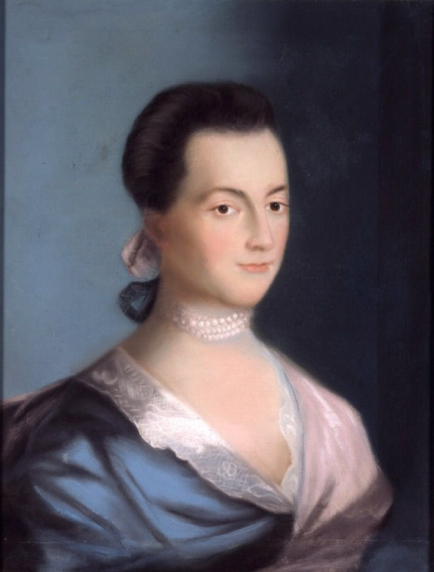
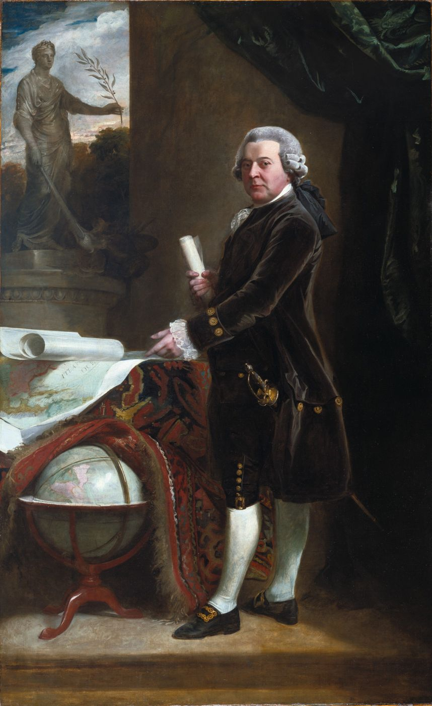
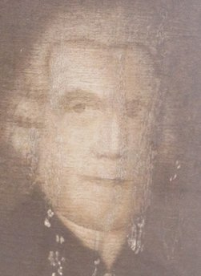
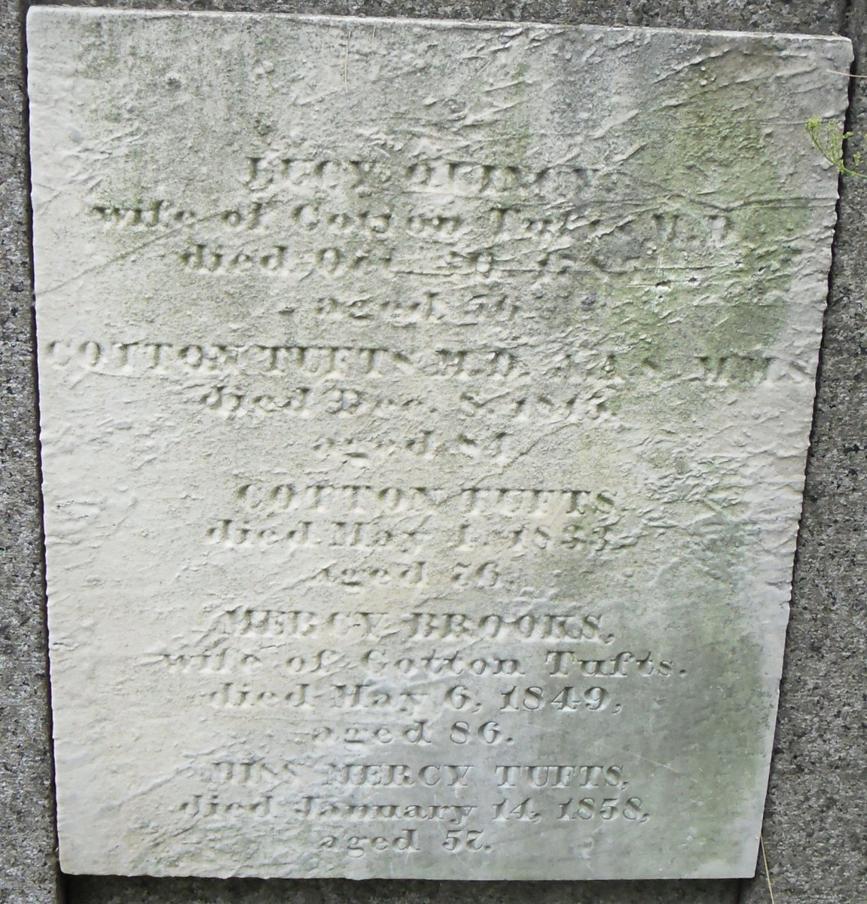

Biography
Dr. Cotton Tufts was born in Medford, the son of Dr. Simon Tufts. He practiced medicine in Weymouth until his death in 1815. A family history records his ties to the Adams family: John Adams noted dining with him in 1796. The same history credits him with service as a state senator and as a delegate to the convention that adopted the Constitution. These points come from a 20th-century secondary source and are quoted as written.
Service Record
Town: Medford; Weymouth · Dates: 1732 – 1815
“Dr. Cotton Tufts besides practicing medicine in Weymouth was a State Senator for many years; also a delegate to the convention which adopted the constitution of the United States; Always an ardent Federalist.”
Jay Franklin Tufts, Tufts Family History 1633–1963 (secondary source), p. 35 · page scan

No entry for Cotton Tufts appears among the Tufts entries in Massachusetts Soldiers and Sailors of the Revolutionary War, vol. XVI (1907), pp. 131–140.
Family Connection
“Dr. Tufts was Dr. Cotton Tufts, born in Medford, the son of Dr. Simon Tufts, first Physician of Medford, and probably also of Massachusetts. Dr. Cotton Tufts started his medical practice in Weymouth and remained there until his death in 1815. His first wife was Lucy Quincy; he later married Susanna Warner.”
Jay Franklin Tufts, Tufts Family History 1633–1963 (secondary source), p. 37 (printed page number per archive.org page map; not legible on the scan) · page scan

“July 17, 1796, yesterday Dr. Tufts and family, also Mr. Otis, (presumably a friend of both families) dined with me.”
Jay Franklin Tufts, Tufts Family History 1633–1963 (secondary source), p. 37, quoting John Adams's diary · page scan
From Tufts Kinsmen
Vol. I
Dr. Cotton Tufts, family no. 11-4: born 30 May 1732 in Medford; died 8 Dec. 1815 in Weymouth. The book covers him at length on pp. 110–112. (Tufts Kinsmen, Vol. I, p. 110–112, family no. 11-4; owner-supplied extract; page scan not on file)
His father, Dr. Simon Tufts (11-1), is described as an ardent Whig who treated the wounded after Lexington and Concord and at Bunker Hill. See Dr. Simon Tufts. (Tufts Kinsmen, Vol. I, p. 110, family no. 11-1; owner-supplied extract; page scan not on file)
Identity match: clean. Medford birth, Weymouth death in 1815, and his father Dr. Simon Tufts agree with Tufts Family History, pp. 35, 37. Vol. I supplies the birth date that was missing. Per the owner’s note, his Revolutionary service details (e.g. Committee of Safety) are in Vol. II’s coverage and are not added here.
⚑ Unverified
State senate and ratifying-convention service come only from the secondary Tufts Family History. The same page lists “Cotton, Jr. (Esq), (1791-1872)” with dates identical to “Quincy (1791-1872)”, an apparent error in the source (p. 35). The Tufts Kinsmen Vol. I statements on this page come from an extract supplied by the owner and have not yet been checked against a page scan (citation rule: page scan not on file).
Learned Societies
American Academy of Arts and Sciences, 1780
“Be it therefore Enacted … that the Honble Samuel Adams Esqr., Honble John Adams Esqr., … Honble John Hancock Esqr., … Cotton Tufts Esqr., … be, and they hereby are formed into, constituted & made a body politic and corporate, by the name of the American Academy of Arts and Sciences”
Act of incorporation, passed May 3, 1780, as copied into the Academy’s Minutes, vol. 1, pp. 1–2. American Academy archives transcription; charter and list of the 62 charter members
He was one of 62 incorporators named in the act. The Academy’s own charter page lists him among its charter members.
⚑ Unverified
The date. The copied minutes say the act passed May 3, 1780; the Academy’s charter page says it was granted May 4, 1780.
Massachusetts Medical Society: an incorporator, 1781
“Tufts was also an incorporator of the Massachusetts Medical Society in 1781 and served as its fourth president (1787–1795).”
Harvard Library, Contagion: “Cotton Tufts Papers”; also ArchiveGrid record for B MS c30
The Society was incorporated on November 1, 1781, with thirty-one incorporators (Cash, as below, text at nn. 45–46).
⚑ Unverified
The 1781 act itself, with its list of names, has not been seen. Cotton Tufts’s place among the incorporators rests on the Countway Library’s description.
President of the Massachusetts Medical Society, 1787–1795
“Cotton Tufts, Weymouth, 1787-1795”
Massachusetts Medical Society, Past Presidents of the Massachusetts Medical Society
On the Society’s list he follows Edward Augustus Holyoke (1786–1787), William Kneeland (1784–1786) and Holyoke’s first term (1782–1784), which makes him the fourth president.
The 1765 plan for a medical society
“The prime mover in the attempt to found a colonywide medical society in 1765 was Dr. Cotton Tufts of Weymouth, later a major force in the early years of the Massachusetts Medical Society.”
Philip Cash, “The Professionalization of Boston Medicine, 1760–1803,” Medicine in Colonial Massachusetts (Colonial Society of Massachusetts, 1980), n. 33. Online text
Cash calls the 1765 effort “the abortive attempt” (same article, text at n. 33). A 1959 note in the New England Journal of Medicine also says that Cotton planned the first state medical society in 1765 and that the plan fell through (“From the Curator’s Notebook: Cotton Tufts to Cotton Tufts, 1776,” New England Journal of Medicine 260 (March 26, 1959). DOI; abstract only seen). His older brother, Dr. Simon Tufts (1727–1786), was called to the plan’s first meeting (see his profile).
⚑ Unverified
No minutes or letters of the 1765 meeting have been seen. Cotton’s letters about it are probably among his Countway papers, which have not been read.
Pictures






_-_H74_-_Harvard_Art_Museums.jpg){kind=link}


Find a Grave
Find a Grave memorial 68293670. As given there (secondary; not checked against original records): Born 30 May 1732, Medford; died 8 Dec 1815, Weymouth. Buried North Weymouth Cemetery. Parents Dr. Simon Tufts and Abigail (Smith) Tufts; wife Lucy (Quincy) Tufts (1729–1785); son Cotton Tufts Jr. (1757–1833).




Letters
Further Research Links
Outside resources for further research. Secondary and user-contributed sites (blogs, family trees, memorial sites, Wikipedia) are not verified here.
- Internet Archive – full 1864 address, searchable/downloadable / Internet Archive (full digitized scan) / Internet Archive – West Cambridge on the Nineteenth of April, 1775 (full digitized scan, searchable/downloadable) (Internet Archive)
- Google Books – 1864 original, p. 38 section / Google Books (1864 original) / Google Books – 1864 original (relevant section p. 38) (books.google.com)
- Massachusetts Medical Society – Past Presidents / Massachusetts Medical Society – Past Presidents (Cotton Tufts, 1787–1795) (massmed.org)
- Cotton Tufts to John Adams, 25 July 1775 (Founders Online (National Archives))
- John Adams to Cotton Tufts, 30 June 1776 (Founders Online (National Archives))
- Cotton Tufts to John Adams, 2 November 1778 (Founders Online (National Archives))
- Abigail Adams to Cotton Tufts, 8 March 1785 (Founders Online (National Archives))
- Cotton Tufts to Abigail Adams, 11 April 1785 (Founders Online (National Archives))
- Abigail Adams to Cotton Tufts, 26 April 1785 (Founders Online (National Archives))
- Cotton Tufts to Abigail Adams, 6 July 1786 (Founders Online (National Archives))
- Abigail Adams to Cotton Tufts, 10 October 1786 (Founders Online (National Archives))
- Abigail Adams to Cotton Tufts, 10 March 1787 (Founders Online (National Archives))
- Cotton Tufts to Abigail Adams, 20–24 September 1787 (Founders Online (National Archives))
- John Adams to Cotton Tufts, 23 January 1788 (Founders Online (National Archives))
- Abigail Adams to Cotton Tufts, 6 February 1791 (Founders Online (National Archives))
- Abigail Adams to Cotton Tufts, 29 June 1798 (Founders Online (National Archives))
- Abigail Adams to Cotton Tufts, 28 November 1800 (Founders Online (National Archives))
- Abigail Adams to Cotton Tufts, 15 January 1801 (Founders Online (National Archives))
- Cotton Tufts to John Adams, 24 November 1785 (Founders Online (National Archives))
- Founders Online – Search all Adams Papers for Cotton Tufts / Founders Online – Search all Adams Papers for Cotton Tufts (all letters confirmed and searchable) (Founders Online (National Archives))
- Full PDF (Internet Archive)
- Massachusetts Historical Society Digital Adams Papers (Massachusetts Historical Society)
- Wikipedia – Cotton Tufts (biography, Stamp Act instructions, medical career) (Wikipedia)
- Weymouth Public Library – Tufts / Smith / Adams Family Collection (original papers and diphtheria notes) (weymouth.ma.us)
- Digital Commonwealth – Tufts-Smith-Adams Family Papers (scans and descriptions) (digitalcommonwealth.org)
- Adams National Historical Park – John Quincy Adams Birthplace (official NPS page with birth details) (nps.gov)
- National Register of Historic Places – John Quincy Adams Birthplace (PDF with verified history) (npshistory.com)
- Wikipedia – John Quincy Adams (birth section with primary citations) (Wikipedia)
- White House Historical Association – John Quincy Adams biography (birth confirmed 11 July 1767, Braintree) (whitehousehistory.org)
- FamilySearch – Dr. Cotton Tufts (verified vital records and family tree) (ancestors.familysearch.org)
- Google Books – Adams Family Correspondence, Volume 8 (multiple Tufts references and full letter texts) (books.google.com)
- Google Books – Dearest Friend: A Life of Abigail Adams (contextual references to Cotton Tufts correspondence and role) (books.google.com)
- A Matrimonial Story (John Adams diary anecdote involving Dr. Cotton Tufts at Cranch wedding) (boston1775.blogspot.com)
- Perspectives on Boston’s 1764 Smallpox Epidemic (Dr. Cotton Tufts referral for inoculation) (boston1775.blogspot.com)
- No Pox Party in John Adams (Cotton Tufts mentioned as cousin/physician) (boston1775.blogspot.com)
- The First Skirmish in Boston Harbor (Dr. Cotton Tufts in family distress account) (boston1775.blogspot.com)
- “Get a Horse for Pappa” (Cotton Tufts offering a horse) (boston1775.blogspot.com)
- Surely the most ridiculous expedition… (Dr. Cotton Tufts health update) (boston1775.blogspot.com)
- A Thanksgiving Dinner Gone Wrong (JQA letter to cousin Cotton Tufts) (boston1775.blogspot.com)
- John Quincy Adams’s College Entrance Exam (Dr. Cotton Tufts vouching for JQA) (boston1775.blogspot.com)
- A Presidential Ice Cream Order (Abigail Adams letter to Cotton Tufts) (boston1775.blogspot.com)
- Oration in Honour to the Memory of George Washington (1800) – John Adams Library copy (commons.wikimedia.org)
Harvard: Class of 1749; honorary M.D. 1785
Brooks, p. 306: “graduated at Harvard College 1749.” Quinquennial Catalogue (1915): A.M.; M.D. (Hon.) 1785. (Clifford K. Shipton, Sibley’s Harvard Graduates, vol. XII, pp. 493–500 (sketch location from Andrew W. Pollock’s Index of Graduates; sketch text not seen)) See Harvard College.
His Letters
The Adams Papers hold 188 letters by or to Dr. Cotton Tufts, 21 of them touching on smallpox inoculation, fevers, dysentery or measles. Examples: to John Adams, July 5, 1776: “Yesterday People in Boston were openly inoculated for the Small Pox” (MHS). His Countway papers hold letters with his brother Dr. Simon. See Letters of the Tufts Doctors.